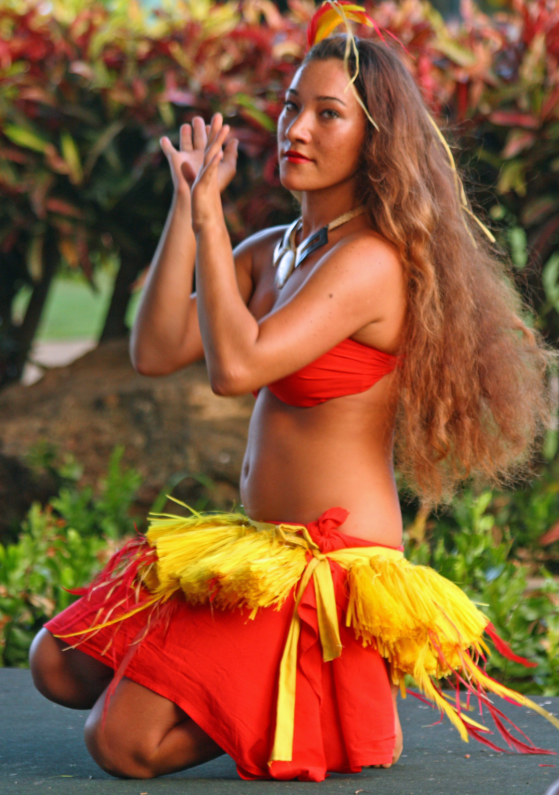
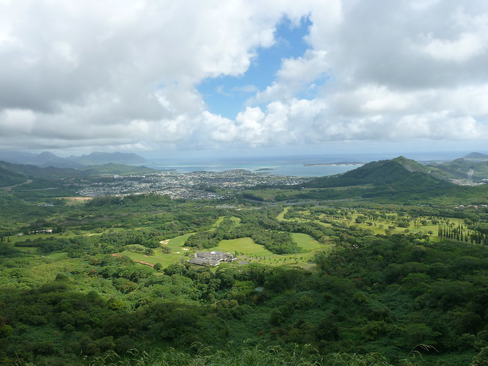

Hawai'i Finest
Welcome to Hawai'i Finest, your ultimate guide to the rich and diverse culture of the native Hawaiian people, also known as kanaka maoli, and their connection to the beautiful land, or da 'aina, that they call home.

Kanaka (Native Hawaiians)
On this page, we explore the vibrant and resilient culture of the kanaka maoli, the indigenous people of Hawaii, and delve into their traditions, customs, language, and contemporary issues affecting their community.
Learn More
Da 'Aina (The Land)
This page is dedicated to understanding the profound connection that the kanaka maoli, the native Hawaiian people, have with their land, or da 'aina. We will explore the sacred relationship between the people and the environment, the cultural practices and values associated with it, and the ongoing struggles to protect and preserve these invaluable resources for future generations.
Learn More
About the Owner of this Site
Have you ever wondered who is behind this incredible journey of discovery into the vibrant culture of the kanaka maoli and the beautiful land of Hawaii? Look no further than our About page, where you'll get to know the passionate and dedicated creator of Hawai'i Finest, a proud native Hawaiian who's determined to share their love and knowledge of their people and home with the world. Click the button below to discover more about their story and vision for this project.
Learn More